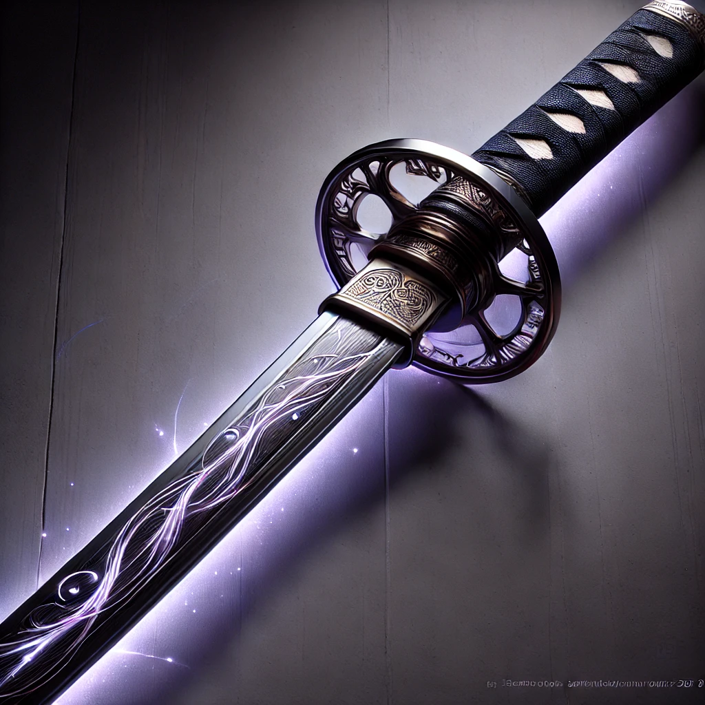

Objets Possédés
- Revolver des Ombres : Arme principale, capable d’infliger des dégâts physiques et psychologiques.
- Katana de l’Éclipse : Lame fine et légère avec la capacité "Lame Silencieuse".
- Cigare Maudit : Objet symbolique, utilisé pour maintenir son aura menaçante.
- Amulette de l’âme : Protège contre les attaques mentales et magiques.